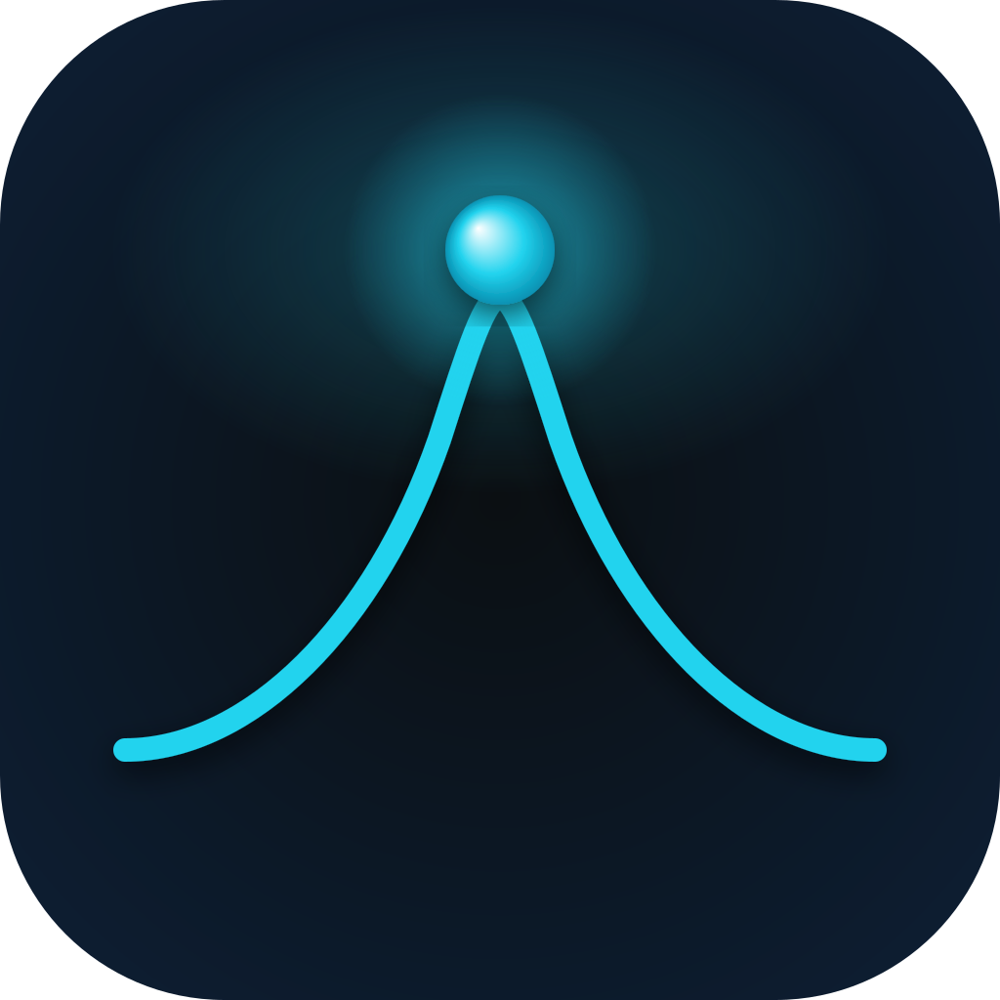

ASTRA Audio Suite — Beta Privado
Plugins de áudio de precisão para engenheiros de mixagem modernos.
Desenvolvido do zero, sem atalhos.
ASTRA Audio Suite v1.0.0 · AUREQ, LUMINAR & GRAVITY · Beta Gratuito
Sobre a ASTRA Audio
ASTRA Audio é uma suíte de plugins VST3 profissionais desenvolvida para engenheiros de áudio que exigem precisão cirúrgica. Cada algoritmo foi construído do zero, cada interface projetada para eliminar fricção entre o engenheiro e o som.
Algoritmos biquad ajustados manualmente para máxima precisão. Sem caixa preta.
Interfaces que saem do seu caminho. Foco total na mixagem.
Todo plugin ASTRA tem a mesma linguagem, o mesmo fluxo — parece casa.
A Coleção
Três plugins disponíveis agora. Mais ferramentas de precisão chegando em breve.

Equalizador Paramétrico
EQ paramétrico de 8 bandas com bandas dinâmicas, analisador de espectro em tempo real e biblioteca de presets de fábrica para sessões de mixagem profissional.
Air Exciter
Enhancer de altas frequências paralelo com Presence, Air e Texture Layer. Adicione ar, clareza e brilho analógico premium sem esforço.
Compressor Dinâmico
Compressão ultra-transparente estilo R-Comp com detecção Peak/RMS, joelho Soft-Knee analógico de 6dB e controle dinâmico inteligente (ARC).
Saturador Harmônico
Adicione calor e caráter analógico. Modos de saturação tape, tubo e transistor com controle por banda.
Limiter de Masterização
Limiting transparente para sessões de masterização. Algoritmo lookahead previne inter-sample peaks sem artefatos.
Download Gratuito
Versão beta privada. Disponível para macOS (Audio Unit, VST3, Standalone) e Windows (VST3, Standalone), prontos para a sua DAW.
Equalizador cirúrgico de 8 bandas com analisador em tempo real e Dynamic EQ.
Enhancer paralelo de altas frequências com presença e ar de estúdio.
Compressor dinâmico com joelho soft-knee, ARC e comportamento Electro/Opto.
Criado por
Todos os plugins da ASTRA Audio são desenvolvidos por Sidy Furtado, engenheiro de áudio e desenvolvedor dedicado a construir ferramentas de precisão para produção musical. Cada algoritmo, cada interação, cada pixel é pensado com o engenheiro de mixagem em mente.